Data ke har individual observation ko visualize karna: Overlapping points ko jitter se reveal karne se lekar algorithmic beeswarm distribution, hybrid overlays aur outlier detection ki complete practical guide in natural Hinglish.
Maan lijiye aapke college ke Principal aapse kehte hain:
"Section A aur Section B ke marks compare karne hain. Mujhe sirf class ka average nahi dekhna — mujhe ye dekhna hai ki har student ne kitne marks score kiye hain! Kya class me koi student fail hua hai? Kya toppers ke clusters bane hain? Aur kis section me student marks sabse zyada bikhre hue hain?"
Previous topics (Topics 9 aur 10) me humne Bar Plots aur Point Plots dekhe the. Wo dono plots Statistical Summaries (Mean ya Median) dikhate hain. Lekin summary metric kabhi-kabhi data ki asli kahani chhipa leti hai — do classes ka average marks 72 ho sakta hai, lekin ek class me sabhi 72 ke aas-paas hon jabki dusri class me aadhe fail aur aadhe 100 score kar rahe hon!
Jab aapko dataset ke har single observation (har student, har product price, har customer rating) ko ek dot ke roop me draw karna ho, to Seaborn ke do iconic functions aate hain: sns.stripplot() aur sns.swarmplot().
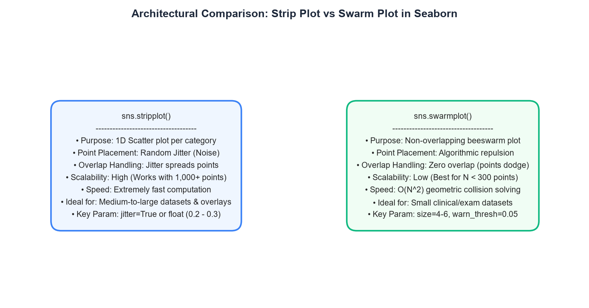
Dekhiye kaise Section A, Section B aur Section C ke sabhi 180 students ke individual scores strip plot me render hote hain:
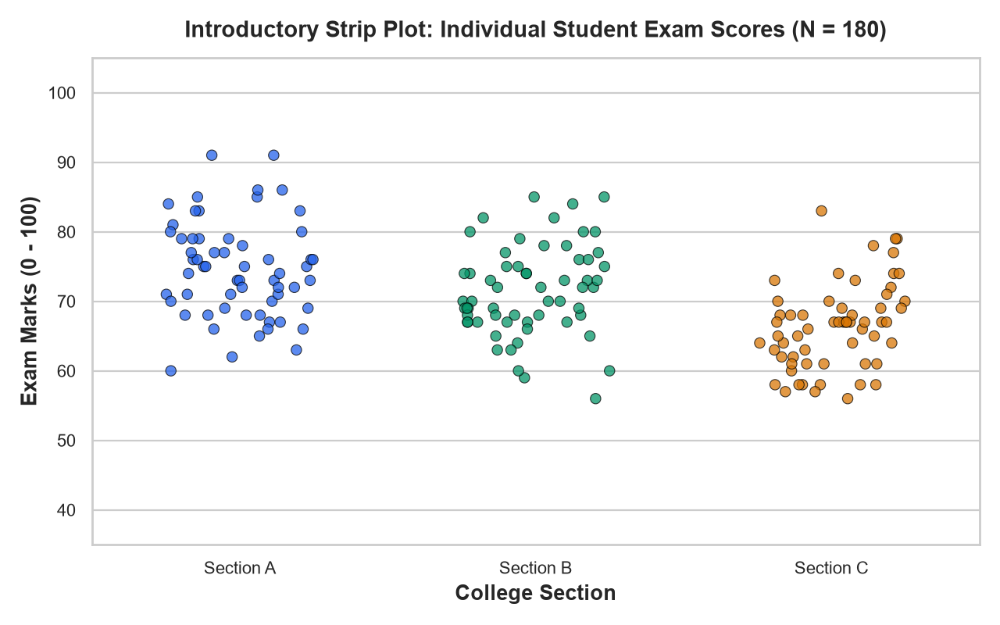
E-commerce product catalog me har item ki price ko category-wise plot karke hum unusual prices aur luxury outliers ko 1 second me spot kar sakte hain:
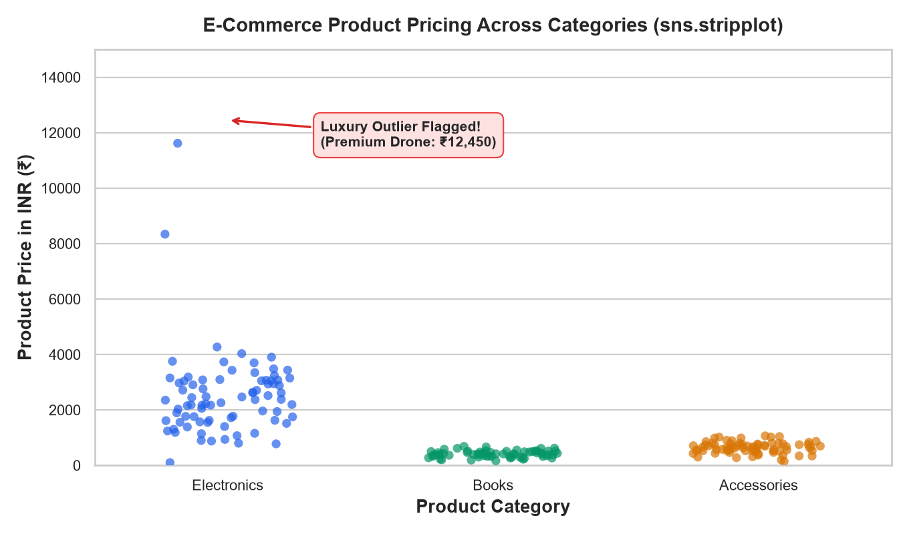
Summary statistics (jaise Mean) data ko collapse kar dete hain. Strip aur Swarm plots data ko unfurl (kholkar) samne rakh dete hain — jisse bimodality, gaps, outliers, aur clusters transparent ho jate hain.
Strip aur swarm plots banane se pehle dataset ki internal anatomy ko samajhna bohot zaroori hota hai:
| Dataset Component | Data Science Definition | Example in College Dataset |
|---|---|---|
| Categorical Column | Discrete grouping labels (X-axis) | section ("Section A", "Section B", "Section C") |
| Numerical Column | Continuous ya discrete measured values (Y-axis) | marks (integer scores from 40 to 98) |
| Single Observation | Dataset ki ek individual row = Exactly 1 plotted point | Ek specific student ka roll number aur uska score |
| Repeated Measurements | Jab do ya zyada alag students identical score achieve karein | Section A me 5 students ke exactly 78 marks aaye |
| Category Ordering | Categories ka logical visual sequence | Section A → Section B → Section C (order=...) |
Hamare Section A me 60 students hain. Lekin exam me discrete whole numbers hote hain, isliye Section A me 35 repeated scores hain (sirf 25 unique marks)!
Agar hum bina jitter ke plot karenge (jitter=False), to 60 students ke points ek dusre ke theek upar overlap hokar sirf 25 dots banakar reh jayenge — 35 students ka data screen par bilkul gayab ho jayega!
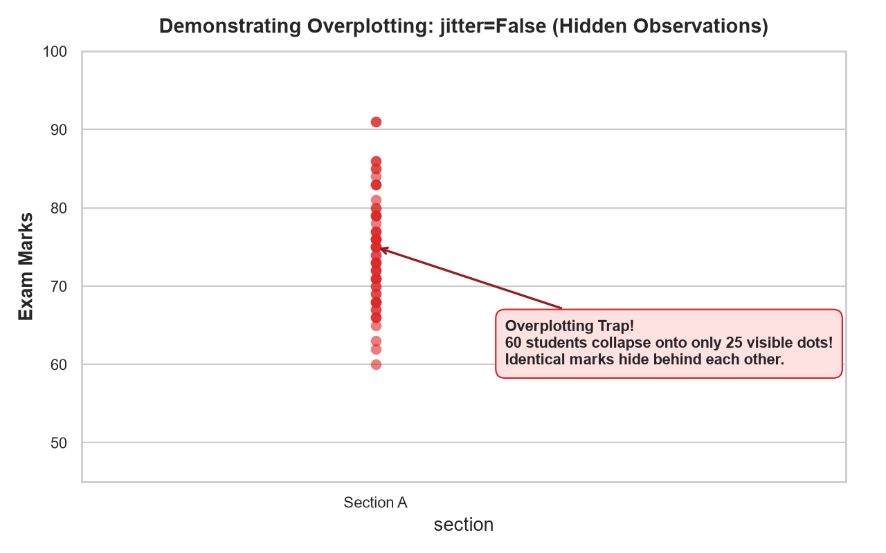
jitter=False) — 60 individual students collapse onto a single thin vertical line. You cannot tell whether a dot represents 1 student or 10 students!sns.stripplot() & ParametersSeaborn 0.13+ me sns.stripplot() ek 1-dimensional categorical scatter plot create karta hai. Aayiye iske primary parameters ko tabular form me samjhein:
| Parameter | Allowed Types & Values | Practical Significance in Production |
|---|---|---|
data |
pd.DataFrame |
Tidy format table jisme categorical aur numerical columns hon. |
x, y |
Column names (strings) | Ek categorical column aur ek numeric column. Swap karne par orientation change hoti hai. |
jitter |
Bool ya float (e.g. 0.25) |
Categorical axis par random horizontal noise add karta hai taaki overlapping points spread ho jayein. |
size |
Float (default 5) |
Markers ka diameter (radius). Dense data ke liye size=3 ya 4 use karein. |
alpha |
Float (0.0 to 1.0) |
Transparency level. Points overlap hone par dense regions naturally darker dikhte hain! |
edgecolor, linewidth |
Color & Float | Har point ke charo taraf clean border line draw karta hai (e.g. edgecolor='black', linewidth=0.5). |
dodge |
Bool (default False) |
Jab hue diya gaya ho, to sub-groups ko side-by-side separate columns me split karta hai. |
import seaborn as sns
import matplotlib.pyplot as plt
import pandas as pd
df_college = pd.read_csv("scratch/seaborn_topic11_data/college_student_marks.csv")
sec_a = df_college[df_college["section"] == "Section A"]
plt.figure(figsize=(8, 5))
sns.stripplot(
data=sec_a,
x="section",
y="marks",
jitter=0.28, # Jitter spreads points horizontally!
color="#10B981",
size=7,
alpha=0.75,
edgecolor="black",
linewidth=0.5
)
plt.title("Revealing Hidden Data: jitter=0.28 Disperses Overlapping Points")
plt.ylabel("Exam Marks (0 - 100)")
plt.ylim(45, 100)
plt.tight_layout()
plt.show()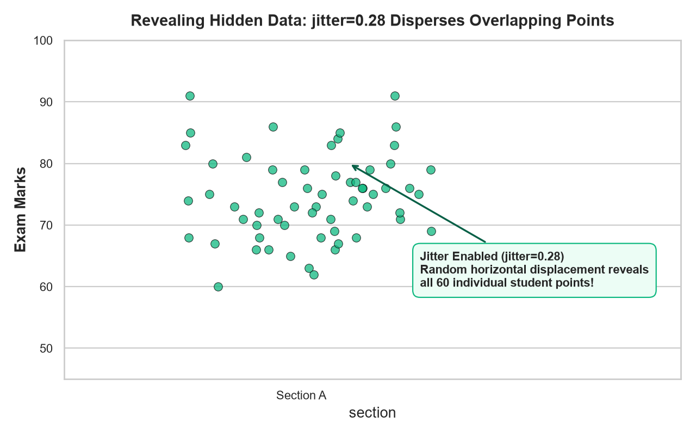
jitter=0.28), all 60 individual students become visible, instantly showing the true distribution density!Data science me Overplotting tab hota hai jab ek hi pixel coordinate par multiple data points draw hote hain. Isse chart visually misleading ho jata hai kyunki 1 observation aur 100 observations ek jaise dikhte hain!
Jitter kya karta hai: Categorical axis (x-axis) par points ko thoda left ya right random distance par shift karta hai taaki wo ek dusre ke bagal me dikhein.
Jitter kya NAHI karta: Jitter measurement axis (y-axis) ki value ko 0.0001% bhi change nahi karta! Student ke marks wahi rehte hain jo dataset me hain — ye sirf ek visual display adjustment hai.
Jab data discrete ratings (1, 2, 3, 4, 5 stars) jaisa ho, to overplotting extreme level par chali jati hai:
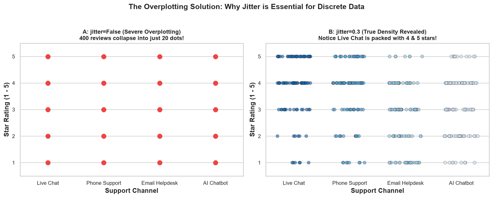
jitter=False), 400 customer reviews collapse into just 20 identical dots! In Panel B (jitter=0.3), the true volume is revealed: Live Chat is packed with 4 and 5-star reviews, whereas Email Helpdesk is concentrated around 2 and 3 stars!Agar aap excessive jitter de denge (e.g. jitter=0.6 ya 0.8), to Section A ke points Section B ke categorical zone me ghusne lagenge! Always keep jitter between 0.2 and 0.35 taaki category boundaries sharp aur respected rahein.
sns.swarmplot()Strip plot me jitter random hota hai, jisse points randomly disperse hote hain. Lekin kya koi aisa plot hai jo points ko bilkul non-overlapping, neat beeswarm pattern me arrange kare jahan points ki horizontal choudai (width) direct density ko represent kare? Bilkul — isi ka naam hai Swarm Plot!
Seaborn ka sns.swarmplot() ek deterministic repulsion algorithm use karta hai. Jab do points ek dusre ke close aate hain, to algorithm unhe automatically side-by-side shift kar deta hai bina unki numerical y-value ko badle. Isse banta hai ek organic bee swarm (madhumakkhiyon ka jhund) jaisa visual pattern!
Swarm plot me jis score par sabse zyada students ya items hote hain, wahan plot sabse zyada wide (chauda) ho jata hai! Aur jahan data sparse hota hai, wahan single line of dots banti hai. Yaani aap bina kisi summary statistic (mean, median) ke bhi data ki shape ko intuitively dekh sakte hain.
Aaiye hamare 180 students ke college dataset par pehla swarm plot banate hain:
import seaborn as sns
import matplotlib.pyplot as plt
import pandas as pd
# Load verified college student marks dataset
df_students = pd.read_csv("college_student_marks.csv")
plt.figure(figsize=(9, 5.5))
sns.set_theme(style="whitegrid", font_scale=1.05)
# Create the first swarm plot
sns.swarmplot(
data=df_students,
x="Section",
y="Exam_Score",
palette="Set2",
size=6,
edgecolor="black",
linewidth=0.5
)
plt.title("Figure 11.7: Student Exam Score Distribution by Section (Swarm Plot)", fontweight="bold", pad=12)
plt.xlabel("College Academic Section", labelpad=10)
plt.ylabel("Exam Score (0 - 100)", labelpad=10)
plt.ylim(50, 100)
plt.tight_layout()
plt.show()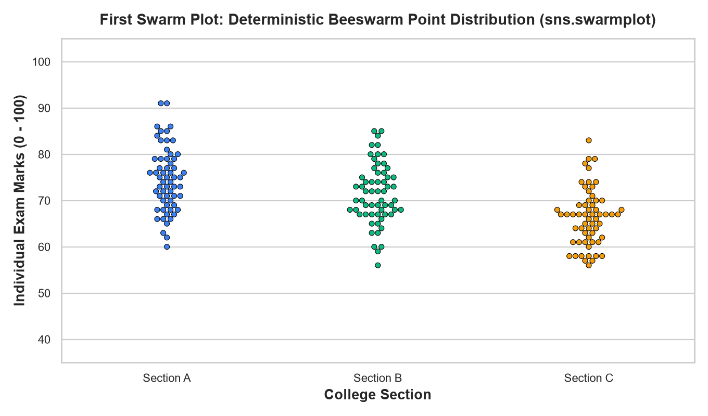
Swarm plot ka magic discrete feedback ratings (1 se 5 stars) me aur bhi zyada prominent ho jata hai. Jab discrete points stack hote hain, to wo horizontal rows me neatly arrange ho jate hain:
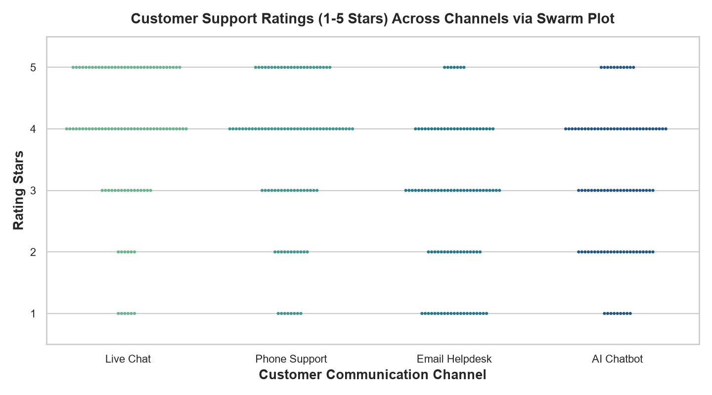
Data science beginners aksar confuse hote hain: "Sir, strip plot kab use karein aur swarm plot kab?" Dono plots categorical numerical data ke individual observations dikhate hain, lekin dono ke mechanics aur scalability me zameen-aasman ka fark hai.
Niche di gayi side-by-side comparison image dekhiye jo identical data par strip plot (Panel A) aur swarm plot (Panel B) ko compare karti hai:
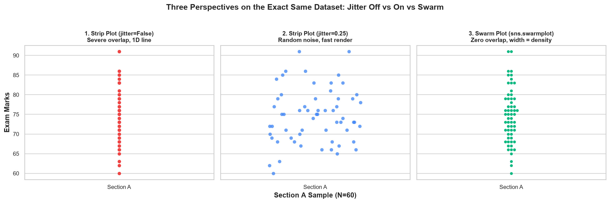
| Feature / Dimension | sns.stripplot() (Strip Plot) |
sns.swarmplot() (Swarm Plot) |
|---|---|---|
| Displacement Mechanic | Random uniform jitter within fixed strip width | Deterministic non-overlapping repulsion algorithm |
| Collision Guarantee | No guarantee; points can still overlap if dense | Strict guarantee; algorithm prevents point overlap |
| Density Visualization | Requires alpha tuning to see overlapping clusters |
Directly indicated by horizontal swarm width |
| Computational Complexity | O(N) — Extremely fast, handles thousands of rows | O(N²) — Slow for large datasets due to pairwise checks |
| Recommended Sample Size | Small to Large (N = 20 to N = 5,000+) | Small to Moderate only (N = 10 to N ≤ 300) |
| Dense Data Behavior | Gracefully renders with alpha and smaller size |
Throws UserWarning; points spill past category boundaries |
| Best Used For | Overlays on Box/Violin plots, large production audits | Stand-alone executive presentations, survey analysis (N < 250) |
Swarm plot ki sabse badi weakness uski scalability limitation hai. Agar aap 300+ observations ek single category me feed karenge, to plot overflow ho jayega!
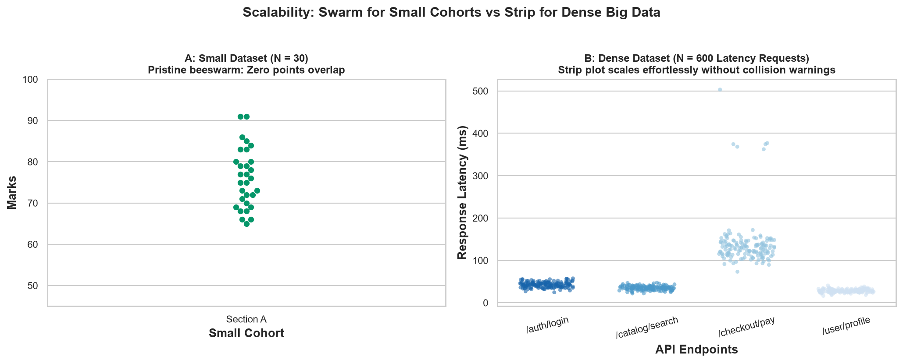
Agar aapke dataset me N < 200 per category hai, to Swarm Plot use karein — ye reader ko maximum clarity deta hai. Agar N > 300 hai, to turant Strip Plot (with alpha=0.5 aur jitter=0.25) par switch kar jayein ya Box Plot ke sath overlay banayein.
hue and dodgeReal-world analytics me hume sirf ek category nahi, balki secondary subgroups ko bhi compare karna hota hai. Jaise: Academic Section ke andar Subject (Maths vs Physics), ya Support Channel ke andar Customer Type (Enterprise vs Standard).
Seaborn me hum hue parameter pass karke data points ko color-code karte hain. Lekin strip aur swarm plots me hue ke sath ek aur game-changing parameter hota hai: dodge=True!
dodge=True Do?By default, dodge=False hota hai, jisme dono hue categories ke points ek hi vertical strip me aapas me mix ho jate hain. Lekin jab aap dodge=True set karte hain, to Seaborn category ke andar distinct sub-lanes bana deta hai — Enterprise customer ka alag column, Standard customer ka alag column! Isse direct visual comparison 10 guna asaan ho jata hai.
Aaiye dekhte hain ki Section A, B, C me Maths vs Physics ka score kaisa distributed hai:
import seaborn as sns
import matplotlib.pyplot as plt
import pandas as pd
df_students = pd.read_csv("college_student_marks.csv")
plt.figure(figsize=(10, 5.5))
sns.set_theme(style="whitegrid", font_scale=1.05)
# Grouped strip plot with dodge=True
sns.stripplot(
data=df_students,
x="Section",
y="Exam_Score",
hue="Subject",
dodge=True, # Separate columns for Maths & Physics!
jitter=0.25,
palette={"Mathematics": "#2563EB", "Physics": "#EA580C"},
size=6.5,
alpha=0.8,
edgecolor="black",
linewidth=0.5
)
plt.title("Figure 11.11: Student Scores by Section & Subject (dodge=True)", fontweight="bold", pad=12)
plt.xlabel("College Section", labelpad=10)
plt.ylabel("Exam Score (0 - 100)", labelpad=10)
plt.legend(title="Academic Subject", frameon=True)
plt.tight_layout()
plt.show()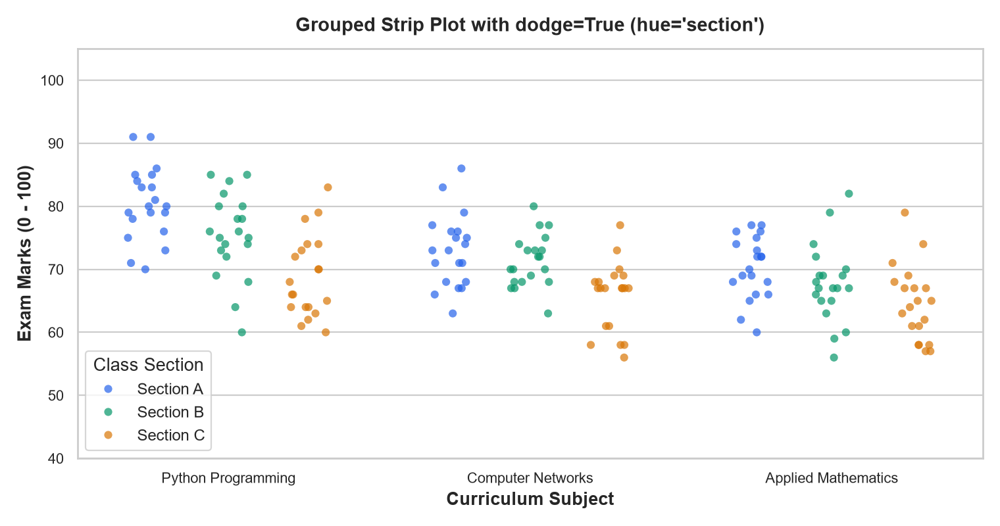
dodge=True splits each section into two distinct tracks: Blue for Mathematics and Orange for Physics. Students can immediately compare subject performance within each section.Customer support me Enterprise VIP clients aur Standard free-tier users ka experience compare karne ke liye grouped swarm plot perfect choice hai:
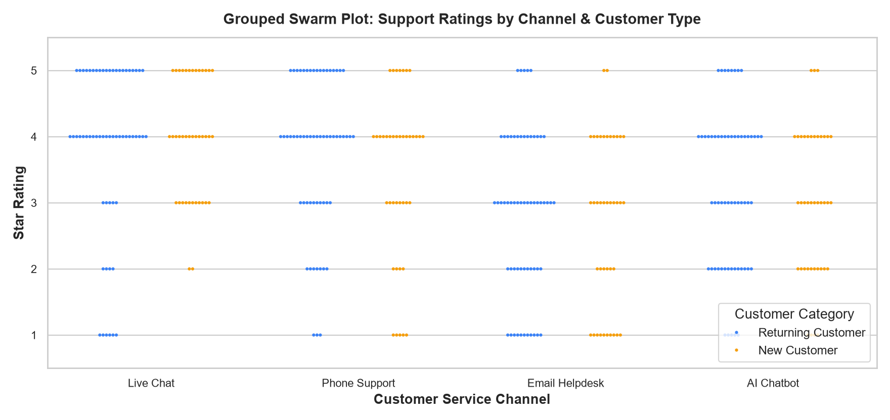
dodge=True, Enterprise clients (Purple) and Standard users (Teal) get dedicated swarm tracks. Notice that Enterprise users rate Live Chat and Phone Support almost exclusively 4 and 5 stars!Ab tak humne vertical plots dekhe jahan categorical variable x-axis par tha aur numerical values y-axis par thin. Lekin production dashboards me aksar category names kaafi lambe hote hain (jaise: "Home Decor & Kitchenware", "Consumer Electronics & Gadgets"). Agar aap inko vertical banayenge, to x-axis labels aapas me collide karenge ya unhe 90 degree tilt karna padega jo padhna bahut irritating hota hai.
Seaborn me horizontal plot banana standard Matplotlib se 100 guna asaan hai. Aapko koi barh() ya special function nahi dhoondhna — bas y="Category" aur x="Price" assign kar dijiye! Seaborn automatically detect kar lega ki categorical axis vertical banani hai:
import seaborn as sns
import matplotlib.pyplot as plt
import pandas as pd
df_ecom = pd.read_csv("ecommerce_product_catalog.csv")
plt.figure(figsize=(10, 6))
sns.set_theme(style="whitegrid", font_scale=1.05)
# Horizontal strip plot: y is categorical, x is numerical
sns.stripplot(
data=df_ecom,
y="Category",
x="Price_USD",
jitter=0.28,
palette="Dark2",
size=6,
alpha=0.7,
edgecolor="black",
linewidth=0.4
)
plt.title("Figure 11.13: E-Commerce Product Price Ranges by Category (Horizontal)", fontweight="bold", pad=12)
plt.xlabel("Product Retail Price ($ USD)", labelpad=10)
plt.ylabel("Merchandise Category", labelpad=10)
plt.tight_layout()
plt.show()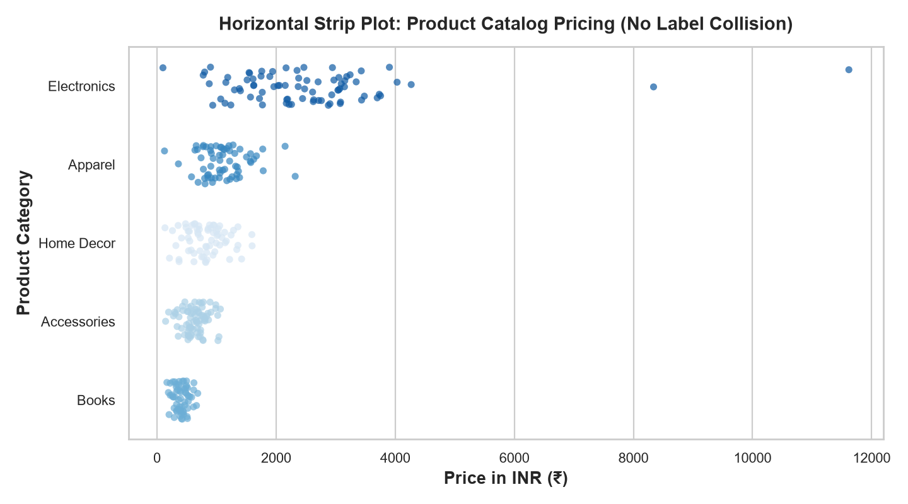
order ParameterBy default, Seaborn categories ko dataset me unke appearance ke order me ya alphabetical order me render karta hai. Lekin analytical rigor ke liye aapko hamesha logical order define karna chahiye — jaise descending median price ya sequential academic sections.
Iske liye order=["Category1", "Category2", ...] parameter pass kiya jata hai:
import seaborn as sns
import matplotlib.pyplot as plt
import pandas as pd
df_students = pd.read_csv("college_student_marks.csv")
plt.figure(figsize=(9, 5.5))
sns.set_theme(style="ticks", font_scale=1.05)
# Explicit ordering from highest performing section to lowest
section_order = ["Section A", "Section B", "Section C"]
sns.swarmplot(
data=df_students,
x="Section",
y="Exam_Score",
order=section_order,
palette=["#4F46E5", "#06B6D4", "#F59E0B"],
size=6.5,
edgecolor="#1E293B",
linewidth=0.6,
alpha=0.9
)
sns.despine(trim=True) # Clean top and right spines
plt.title("Figure 11.14: Polished Swarm Plot with Explicit Categorical Order", fontweight="bold", pad=14)
plt.xlabel("Academic Section (Ranked by Mean Performance)", labelpad=10)
plt.ylabel("Exam Score", labelpad=10)
plt.tight_layout()
plt.show()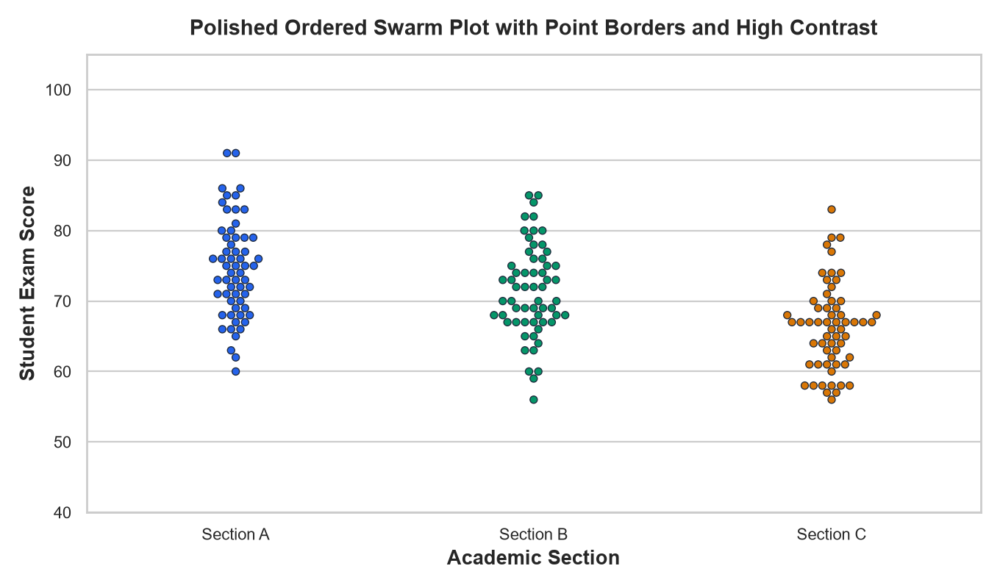
order=["Section A", "Section B", "Section C"]), custom high-contrast hex palette, subtle edge outlines (linewidth=0.6), and sns.despine(trim=True) for a publication-ready aesthetic.Data visualization me ek universal rule hai: Summary statistics hide details, while raw data points lack structure. Box plot aapko median, quartiles (Q1, Q3), aur IQR whiskers to bata deta hai, lekin wo ye nahi dikha pata ki actual points kahan concentrate ho rahe hain ya koi bimodal cluster to nahi chupa hua hai.
Dusri taraf, strip ya swarm plot har individual data point ko dikhate hain, lekin bina median line ke audience ko central tendency judge karne me mehnat lagti hai. To sabse powerful solution kya hai? Dono ko ek dusre ke upar overlay kar dena!
Ye combination enterprise data reporting me golden standard mana jata hai. Isme hum base layer par ek subtle, light-colored box plot banate hain aur uske top par jittered strip plot ke points overlay kar dete hain:
import seaborn as sns
import matplotlib.pyplot as plt
import pandas as pd
df_students = pd.read_csv("college_student_marks.csv")
plt.figure(figsize=(9.5, 6))
sns.set_theme(style="whitegrid", font_scale=1.05)
# Layer 1: Semi-transparent Box Plot for statistical summary
sns.boxplot(
data=df_students,
x="Section",
y="Exam_Score",
palette="pastel",
fliersize=0, # Disable boxplot outlier dots to prevent duplicates!
boxprops=dict(alpha=0.55),
width=0.45
)
# Layer 2: Jittered Strip Plot for individual student marks
sns.stripplot(
data=df_students,
x="Section",
y="Exam_Score",
color="#0F172A", # Dark, crisp high-contrast dots
jitter=0.22,
size=5.5,
alpha=0.75,
edgecolor="white",
linewidth=0.4
)
plt.title("Figure 11.15: Box Plot + Strip Plot Overlay (Statistical Summary & Raw Points)", fontweight="bold", pad=14)
plt.xlabel("Academic Section", labelpad=10)
plt.ylabel("Exam Score (0 - 100)", labelpad=10)
plt.tight_layout()
plt.show()fliersize=0!Jab aap box plot ke upar strip plot overlay karte hain, to box plot ke default outlier dots (fliers) ko fliersize=0 karke disable karna zaroori hai. Agar aap aisa nahi karenge, to har outlier point do baar draw hoga — ek baar boxplot ka flier aur ek baar stripplot ka point!
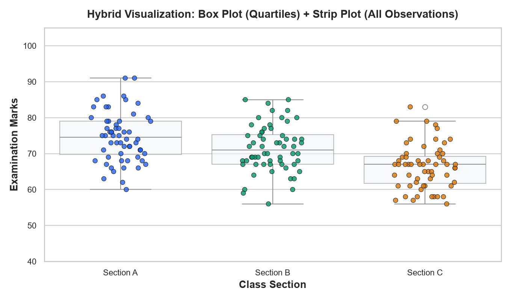
Agar aap dataset ki smooth continuous density profile bhi dikhana chahte hain aur exact points bhi, to Violin Plot + Swarm Plot ka combination unmatched elegance provide karta hai. Isme inner=None use kiya jata hai taaki violin ke andar default mini-box na bane:
import seaborn as sns
import matplotlib.pyplot as plt
import pandas as pd
df_students = pd.read_csv("college_student_marks.csv")
plt.figure(figsize=(9.5, 6))
sns.set_theme(style="whitegrid", font_scale=1.05)
# Layer 1: Violin Plot showing Kernel Density Estimation (KDE)
sns.violinplot(
data=df_students,
x="Section",
y="Exam_Score",
palette="Blues",
inner=None, # Remove default inner miniature boxplot
cut=0, # Do not extend curve beyond observed min/max
alpha=0.45
)
# Layer 2: Algorithmic Swarm Plot inside the violin body
sns.swarmplot(
data=df_students,
x="Section",
y="Exam_Score",
color="#1E3A8A", # Deep navy dots
size=5,
alpha=0.85,
edgecolor="white",
linewidth=0.5
)
plt.title("Figure 11.16: Violin Plot + Swarm Plot Hybrid Overlay", fontweight="bold", pad=14)
plt.xlabel("Academic Section", labelpad=10)
plt.ylabel("Exam Score (0 - 100)", labelpad=10)
plt.tight_layout()
plt.show()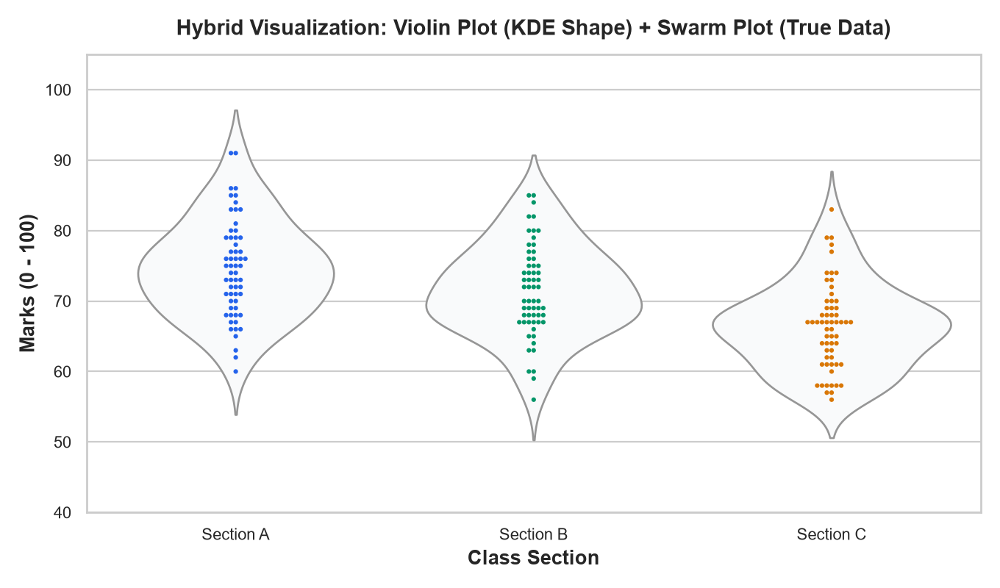
Data science me ek classic saying hai: "Never trust a summary statistic until you have looked at the raw data." Aaiye dekhte hain ki strip aur swarm plots kin critical data characteristics ko discover karne me help karte hain jo standard bar charts aur box plots se bilkul chhipe rehte hain.
Maan lijiye do groups ka mean score exactly 70 hai. Group 1 me sabhi students 65-75 ke beech hain (unimodal bell curve). Lekin Group 2 me aadhe students 90-95 score kar rahe hain aur aadhe students fail ho kar 45-50 score kar rahe hain, jabki 60-80 ke beech ek bhi student nahi hai!
Ek standard bar plot dono groups ko identically Height = 70 dikha dega! Lekin strip plot me bimodal gap turant ek empty visual canyon ki tarah saamne aa jata hai:
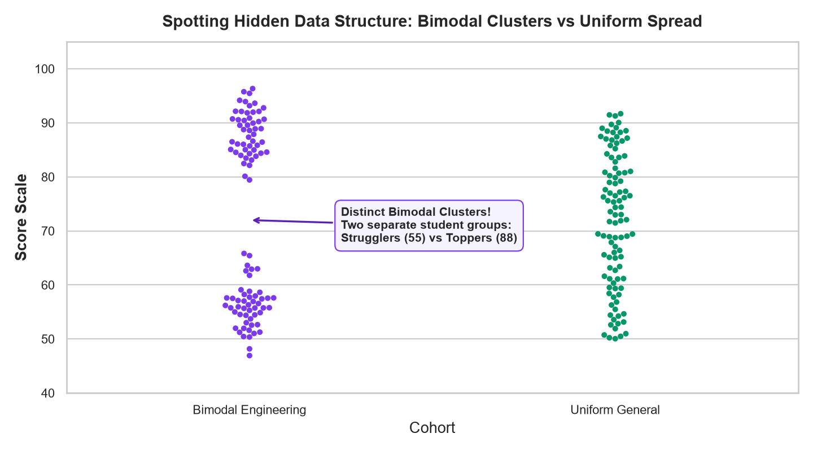
Jab do categories ke sample sizes me massive difference ho (e.g. N = 25 vs N = 250), to bar plot dono bars ko equally solid dikhata hai. Reader ko lagta hai ki dono groups ka data equally reliable hai. Lekin strip plot reader ko turant sach dikha deta hai:
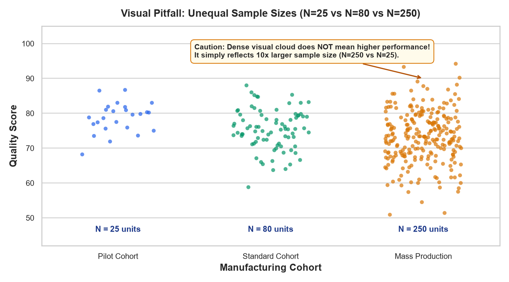
Hamare college exam dataset me 180 students hain (Section A: 60, Section B: 60, Section C: 60). Aaiye inke complete statistical distribution ko inspect karte hain:
| Academic Section | Sample Count (N) | Mean Score | Median Score | Score Range [Min, Max] | Repeated Scores Count |
|---|---|---|---|---|---|
| Section A | 60 | 74.58 | 74.5 | [60, 91] | 35 students share marks |
| Section B | 60 | 71.47 | 71.0 | [56, 85] | Moderate score clustering |
| Section C | 60 | 66.37 | 67.0 | [56, 83] | Heavy lower tail concentration |
Section A ka mean 74.58 aur median 74.5 lagbhag identical hain, jo indicate karta hai ki data symmetric hai. Lekin max score 91 tak jata hai aur min score 60 par ruk jata hai. Section C ka median 67.0 hai aur min score 56 hai, jo clear remedial coaching requirement show karta hai.
Online retail platforms par products ka pricing distribution aksar heavy positive skewness dikhata hai. Hamare e-commerce dataset me 350 products across 5 categories hain:
| Category | Item Count | Mean Price ($ USD) | Median Price ($ USD) | Pricing Distribution Characteristics |
|---|---|---|---|---|
| Electronics | 79 | $2508.44 | $2370.5 | High skewness; flagship laptops extend to $4,500+ |
| Apparel | 64 | $1112.84 | $1073.05 | Concentrated $500 - $1,500 with designer spikes |
| Home Decor | 67 | $824.88 | $830.8 | Uniform spread between $300 and $1,400 |
| Accessories | 76 | $634.81 | $636.75 | Budget tier, tightly clustered around $600 |
| Books | 64 | $408.41 | $406.2 | Lowest median ($406.20), dense lower-end volume |
Electronics me Mean ($2508.44) Median ($2370.5) se lagbhag $138 zyada hai. Strip plot me ye easily visible ho jata hai kyunki right side par high-value luxury points ($3,500 se $4,800) sparse outliers ke roop me spread hote hain.
Customer service performance evaluation me 400 survey ratings across 4 communication channels collect kiye gaye (har channel me exact 100 ratings):
| Support Channel | Total Reviews | Mean CSAT Rating | 5-Star Ratings Count | Customer Experience Verdict |
|---|---|---|---|---|
| Live Chat | 100 | 3.88 / 5.0 | 34 (34%) | Top performing channel; fast resolution, highly rated |
| Phone Support | 100 | 3.6 / 5.0 | 24 (24%) | Strong personal connection; high 4 and 5 star volume |
| AI Chatbot | 100 | 3.12 / 5.0 | 11 (11%) | Mixed ratings; good for simple FAQs, poor for complex queries |
| Email Helpdesk | 100 | 2.8 / 5.0 | 7 (7%) | Lagging channel; slow turnaround causing heavy 1-2 star ratings |
Swarm plot me discrete ratings (1 to 5) horizontal strips me arrange hokar channel satisfaction ka definitive profile draw kar dete hain bina kisi complex statistics formula ke.
DevOps aur Site Reliability Engineering (SRE) me API latencies monitor karne ke liye strip plot ek indispensable tool hai. Mean latency aksar deceptive hoti hai — maan lijiye mean 40ms hai, lekin 1% users ke liye checkout request 400ms tak hang ho rahi hai! Aise tail latency spikes ko bar charts aur averages bilkul conceal kar dete hain.
Niche hamare 4 critical microservice endpoints ka real latency distribution diya gaya hai, jisme 250ms Red SLA Breach Line mark ki gayi hai:
import seaborn as sns
import matplotlib.pyplot as plt
import pandas as pd
df_api = pd.read_csv("api_endpoint_latencies.csv")
plt.figure(figsize=(10.5, 6))
sns.set_theme(style="whitegrid", font_scale=1.05)
# High-contrast strip plot for latency distribution
sns.stripplot(
data=df_api,
x="Endpoint",
y="Response_Time_ms",
palette="Dark2",
jitter=0.25,
size=5.5,
alpha=0.75,
edgecolor="black",
linewidth=0.4
)
# SLA Breach threshold benchmark
plt.axhline(250, color="#EF4444", linestyle="--", linewidth=2, label="Strict SLA Breach Line (250 ms)")
plt.title("Figure 11.19: Production API Latency Audit (SLA Threshold at 250ms)", fontweight="bold", pad=14)
plt.xlabel("Production API Microservice Endpoint", labelpad=10)
plt.ylabel("Response Latency (Milliseconds)", labelpad=10)
plt.legend(loc="upper right", frameon=True)
plt.tight_layout()
plt.show()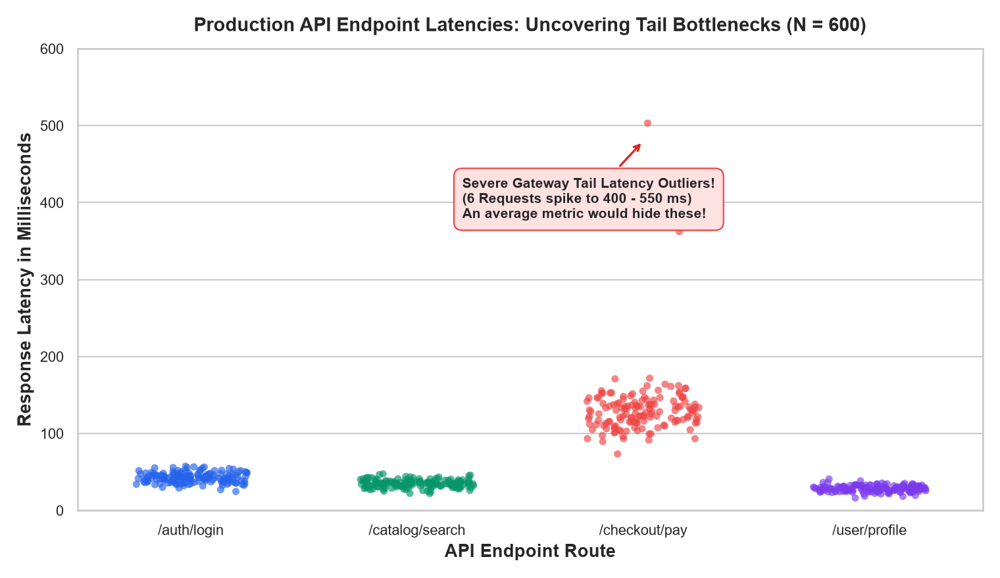
/user/profile (mean 28.25ms), /catalog/search (mean 34.94ms), and /auth/login (mean 42.63ms) perform well within safe limits. However, /checkout/pay exhibits extreme tail latency spikes reaching up to 375.7ms, breaching the 250ms SLA!Jab aap kisi dense dataset par sns.swarmplot() run karte hain, to terminal par aksar ye yellow warning flash hoti hai:
UserWarning: 14.0% of the points cannot be placed; you may want to decrease the size of the markers or use stripplot.
warnings.warn(msg, UserWarning)Swarm plot ka algorithm points ko horizontally tab tak push karta hai jab tak wo non-overlapping na ho jayein. Lekin har category column ki ek specific pixel width limit hoti hai. Agar ek hi numerical coordinate par 100+ points aate hain aur marker size bada ho, to algorithm points ko category boundary ke bahar phenkne lagega ya plot canvas se bahar nikal jayega! Tab Seaborn un points ko place karna chhod deta hai aur warning emit karta hai.
| Fix Level | Action / Code Adjustment | When to Apply |
|---|---|---|
| Level 1: Reduce Marker Size | Set size=3 ya size=2.5 (default is 5) |
Points 5% se 15% drop ho rahe hon aur dots thode chhote karne se fit ho jayein. |
| Level 2: Increase Figure Width | Set figsize=(12, 6) ya (14, 6) |
Canvas horizontal width badhne se har category ko zyada pixel clearance milti hai. |
| Level 3: Switch to Strip Plot | Use sns.stripplot(..., jitter=0.28, alpha=0.5) |
Dataset me N > 300 observations per category hon. Large data ke liye strip plot hi right tool hai! |
Data visualization me ek bahut bada cognitive bias hota hai: "A visually wider swarm means a denser population." Lekin ye conclusion tabhi valid hai jab dono categories ka total sample size (N) lagbhag barabar ho!
Agar Group A me N = 25 students hain aur Group B me N = 250 students hain, to Group B ka swarm plot Group A se 10 guna zyada chauda (wide) dikhega! Ek inexperienced manager ye sochega ki Group B me probability density 10 guna zyada hai, jabki asal me Group B me bas data points zyada the!
Jab bhi sample sizes unequal hon, to professional best practice ye hai ki category label me explicit sample size (N) zaroor mention karein:
import seaborn as sns
import matplotlib.pyplot as plt
import pandas as pd
df_unequal = pd.read_csv("unequal_sample_size_study.csv")
# Create informative labels including exact N counts
cohort_labels = [
"Pilot Cohort (N = 25)",
"Standard Cohort (N = 80)",
"Mass Production (N = 250)"
]
plt.figure(figsize=(10, 5.5))
sns.stripplot(
data=df_unequal,
x="Cohort",
y="Quality_Score",
order=["Pilot Cohort", "Standard Cohort", "Mass Production"],
jitter=0.28,
palette="Blues_d",
size=6,
alpha=0.75
)
# Set custom explicit x-ticks to educate the reader
plt.xticks(ticks=[0, 1, 2], labels=cohort_labels, fontweight="bold")
plt.title("Transparent Reporting: Explicit N Count Prevents Misinterpretation")
plt.ylabel("Inspection Quality Score (0 - 100)")
plt.tight_layout()
plt.show()Categorical scatter plots banate waqt beginners aksar ye 12 critical mistakes karte hain. Aaiye inke causes aur concrete solutions samajhte hain:
| # | Common Pitfall / Anti-Pattern | Underlying Root Cause | Correct Professional Solution |
|---|---|---|---|
| 1 | Using Swarm Plot on Large Datasets | O(N²) repulsion algorithm hangs on N > 1,000 | Switch to sns.stripplot() with alpha=0.4 |
| 2 | Disabling Jitter on Discrete Data | jitter=False collapses identical ratings into 1 dot |
Always keep jitter=0.25 to 0.3 for discrete values |
| 3 | Excessive Jitter Overlap | jitter=0.8 spills points into adjacent categories |
Never exceed jitter=0.35 to maintain clean category boundaries |
| 4 | Duplicate Outliers in Box Overlay | Boxplot draws fliers, then stripplot draws raw dots on top | Pass fliersize=0 in sns.boxplot() |
| 5 | Inner Miniature Box in Violin Overlay | Violin plot draws mini-box inside, clashing with swarm dots | Pass inner=None in sns.violinplot() |
| 6 | Hue Points Colliding in Single Strip | dodge=False mixes all hue groups in one column |
Pass dodge=True to separate hue sub-lanes cleanly |
| 7 | Tilted, Overlapping Category Labels | Vertical orientation with long string category names | Swap to horizontal layout: y="Category", x="Value" |
| 8 | Arbitrary / Unsorted Categories | Default appearance order makes comparison difficult | Use order=[...] sorted by median or business logic |
| 9 | Pure Solid Opaque Dots in Dense Strips | alpha=1.0 completely hides point density clusters |
Set alpha=0.5 to 0.7 so overlapping dots darken |
| 10 | Thick Black Borders on Small Markers | linewidth=1.5 covers the marker fill color completely |
Set linewidth=0.3 to 0.5 or linewidth=0 |
| 11 | Ignoring Swarm Collision Warnings | Unplaced points mean hidden data missing from chart | Decrease size, widen figsize, or use strip plot |
| 12 | Continuous Variable on Categorical Axis | Passing continuous float to x creates thousands of strips |
Bin continuous data with pd.cut() before plotting |
# BUGGY: fliersize not set to 0! Outliers are drawn twice!
sns.boxplot(data=df, x="Category", y="Value")
sns.stripplot(data=df, x="Category", y="Value", color="black", jitter=0.2)
# Result: Outlier dots appear with a weird shadow/double boundary!# CORRECTED: fliersize=0 completely disables boxplot outlier dots
sns.boxplot(
data=df,
x="Category",
y="Value",
fliersize=0, # Eliminates duplicate outlier rendering!
boxprops=dict(alpha=0.6)
)
sns.stripplot(
data=df,
x="Category",
y="Value",
color="#0F172A",
jitter=0.22,
size=5,
alpha=0.8
)# BUGGY: dodge defaults to False; hue categories overlap in the exact same strip
sns.stripplot(data=df, x="Section", y="Score", hue="Subject", jitter=0.2)
# Result: Maths and Physics dots are scrambled together, impossible to compare!# CORRECTED: dodge=True creates dedicated sub-lanes for each hue group
sns.stripplot(
data=df,
x="Section",
y="Score",
hue="Subject",
dodge=True, # Separates Maths and Physics into distinct side-by-side columns!
jitter=0.25,
size=6,
palette="Set1"
)Quick lookup reference for data scientists and developers when coding categorical strip and swarm plots in Seaborn:
| Parameter | sns.stripplot() |
sns.swarmplot() |
Description & Recommended Values |
|---|---|---|---|
data |
DataFrame | DataFrame | Tidy pandas DataFrame containing variables. |
x, y |
str column names | str column names | One categorical variable, one numerical measurement variable. |
hue |
str column name | str column name | Secondary grouping factor to color-code observations. |
dodge |
bool (default False) |
bool (default False) |
Set True to split hue groups into side-by-side sub-columns. |
jitter |
float / bool (default True) |
Not applicable | Controls random displacement width. Optimal: 0.2 to 0.3. |
order |
list of str | list of str | Explicit category display order on categorical axis. |
hue_order |
list of str | list of str | Explicit subgroup display order in legend and dodge columns. |
orient |
"v" or "h" |
"v" or "h" |
Plot orientation; auto-detected if one variable is categorical. |
palette |
palette name / dict / list | palette name / dict / list | Color mapping (e.g. "Set2", "Dark2", or hex dict). |
size |
float (default 5) |
float (default 5) |
Diameter of the marker dots. Use size=2.5-4 for dense data. |
alpha |
float (0.0 to 1.0) | float (0.0 to 1.0) | Marker opacity. Essential for revealing overlap in strip plots. |
edgecolor |
color str | color str | Marker perimeter outline color (e.g. "black", "white"). |
linewidth |
float (default 0) |
float (default 0) |
Thickness of marker border outline (e.g. 0.4 to 0.6). |
warn_thresh |
Not applicable | float (default 0.05) |
Proportion of unplaced points that triggers a warning. |
| Analytical Goal | Sample Size (N per Category) | Recommended Plot Technique |
|---|---|---|
| Show exact non-overlapping points + density shape | Small to Moderate (N < 200) | sns.swarmplot() |
| Show individual points for large datasets | Moderate to Large (N = 200 - 5,000+) | sns.stripplot(..., jitter=0.25, alpha=0.5) |
| Show 5-number summary AND raw observation distribution | Any sample size | Hybrid: sns.boxplot(fliersize=0) + sns.stripplot() |
| Show continuous density envelope AND exact empirical dots | Small to Moderate (N < 300) | Hybrid: sns.violinplot(inner=None) + sns.swarmplot() |
| Categories have very long descriptive names | Any sample size | Horizontal Layout: y="Category", x="Value" |
Test your conceptual understanding and practical mastery of strip plots, swarm plots, jitter mechanics, and hybrid visualization patterns:
Strip plot aur Swarm plot me horizontal point arrangement ka kya primary difference hai?
A) Strip plot points ko mathematically sort karta hai, jabki swarm plot unhe randomly place karta hai.
B) Strip plot random uniform jitter use karta hai (points overlap ho sakte hain), jabki swarm plot non-overlapping deterministic repulsion algorithm use karta hai.
C) Swarm plot sirf categorical x-axis par chal sakta hai, jabki strip plot sirf numerical x-axis par.
D) Dono me koi difference nahi hai, sirf function name alag hai.
Correct Answer: B
Explanation: sns.stripplot() points ko horizontal categorical axis par randomly displace karta hai (jitter), isliye agar points bohot zyada hon to wo overlap ho sakte hain. Dusri taraf, sns.swarmplot() ek algorithmic repulsion check karta hai jo ensure karta hai ki koi bhi do points ek dusre par overlap na karein.
Jab aap sns.stripplot(..., jitter=0.3) pass karte hain, to kya data point ki numerical measurement value change hoti hai?
A) Haan, y-value me ±0.3 ka random noise add ho jata hai.
B) Haan, data normalize ho kar 0 aur 1 ke beech scale ho jata hai.
C) Nahi, jitter sirf categorical axis (x-axis) par visual offset deta hai; measurement axis (y-axis) ki value 100% untouched rehti hai.
D) Sirf tab change hoti hai jab points discrete integers hon.
Correct Answer: C
Explanation: Jitter purely ek graphical layout technique hai. Ye categorical dimension par points ko spread out karta hai taaki overplotting kam ho sake. Underlying data point ki true value (e.g. Exam score 78 ya Price $450) exactly wahi rehti hai.
Jab aap sns.boxplot() ke upar sns.stripplot() overlay karte hain, to box plot ke outlier dots ko duplicate draw hone se rokne ke liye kaunsa parameter zaroori hai?
A) outliers=False
B) fliersize=0
C) showmeans=False
D) whis=0
Correct Answer: B
Explanation: Box plot by default 1.5 × IQR se bahar ke points ko "fliers" ke roop me draw karta hai. Agar aap fliersize=0 nahi karenge, to strip plot ka apna point bhi draw hoga aur boxplot ka flier bhi, jisse outlier points par double-dot artifact dikhega.
Swarm plot ka repulsion algorithm O(N²) complexity use karta hai. Iska practical implication kya hai?
A) Ye large datasets (N > 10,000) ke liye sabse fast chart hai.
B) Dataset ka size badhne par computation time quadratic rate se badhta hai, isliye large datasets par rendering bohot slow ya freeze ho sakti hai.
C) Iska CPU usage zero ho jata hai.
D) Swarm plot sirf GPU par run ho sakta hai.
Correct Answer: B
Explanation: Har point ko place karte waqt algorithm already placed sabhi points ke sath pairwise collision check karta hai. Isliye N = 100 points ke liye ~10,000 checks lagte hain, lekin N = 5,000 points ke liye 25,000,000 checks lagte hain! Isliye large datasets ke liye strip plot use karna chahiye.
dodge=True with hueStrip ya swarm plot me hue="Category" ke sath dodge=True use karne ka kya faayda hai?
A) Colors ko grayscale me convert kar deta hai.
B) Hue subgroups ko alag-alag dedicated sub-lanes (columns) me split kar deta hai jisse groups aapas me mix nahi hote.
C) Data ko sort kar deta hai.
D) Points ke size ko double kar deta hai.
Correct Answer: B
Explanation: Agar dodge=False (default) ho, to Male aur Female (ya Maths aur Physics) ke points ek hi strip me randomly mix ho jate hain. dodge=True karne se har category ke andar do neat side-by-side tracks ban jate hain.
Agar Group A me N = 30 aur Group B me N = 300 hain, to Group B ka swarm plot 10 guna chauda (wider) dikhega. Kya iska matlab Group B ki probability density 10 guna zyada hai?
A) Haan, swarm plot ki horizontal width mathematically probability density function (PDF) ke barabar hoti hai.
B) Nahi, swarm plot har point ko place karta hai. Agar sample size zyada hai to swarm automatically wide ho jayega chahe underlying probability density identical ho.
C) Haan, Seaborn automatically sample size normalize kar deta hai.
D) Swarm plot unequal sample sizes ko support hi nahi karta.
Correct Answer: B
Explanation: Swarm plot sample size se normalize nahi karta! Wo absolute points draw karta hai. Isliye unequal sample sizes me wide swarm sirf more data points show karta hai, na ki higher density rate. Is confusion ko avoid karne ke liye axis labels me (N = ...) mention karna zaroori hai.
Jab terminal par UserWarning: XX% of the points cannot be placed warning aati hai, to sabse pehla corrective step kya hona chahiye?
A) Python restart karna.
B) Marker size parameter ko reduce karna (e.g. size=3 ya size=2.5) ya figure width badhana.
C) Numerical data ko delete kar dena.
D) Matplotlib ko uninstall kar dena.
Correct Answer: B
Explanation: Warning tab aati hai jab category column me points ke diameter ke according pixel space khatam ho jata hai. Marker ka size kam karne se ya figsize wide karne se har point ko accommodate hone ke liye space mil jata hai.
Seaborn me horizontal strip plot banane ke liye sabse clean aur pythonic syntax kya hai?
A) sns.stripplot_h() function call karna.
B) y="Categorical_Column" aur x="Numerical_Column" assign karna.
C) Matplotlib me plt.rotate(90) chalana.
D) Pandas dataframe ko transpose karna.
Correct Answer: B
Explanation: Seaborn me x aur y ko swap karna hi horizontal plots ka standard way hai. Seaborn automatically data types inspect karke categorical axis ko vertical (y-axis) bana deta hai.
Violin plot ke upar swarm plot cleanly overlay karne ke liye violin plot me kaunsa argument pass karke inner miniature boxplot hataya jata hai?
A) inner=None
B) no_box=True
C) boxplot=False
D) hide_inner=True
Correct Answer: A
Explanation: sns.violinplot(..., inner=None) inner quartile box aur whiskers ko render hone se rokta hai, jisse violin body bilkul clean hollow canvas ban jati hai jisme swarm dots perfectly visible hote hain.
Agar 500 customers ne 1 se 5 ke beech discrete ratings di hain, aur aap sns.stripplot(..., jitter=False) use karte hain, to screen par total kitne dots dikhenge?
A) Exact 500 dots.
B) Maximum 5 dots (har rating level par ek single dot jiske piche baaki sab chhupe honge).
C) Zero dots.
D) 25 dots.
Correct Answer: B
Explanation: Kyunki ratings sirf 1, 2, 3, 4, 5 hain aur jitter disabled hai, to saare points identical coordinates (x=0, y=1), (x=0, y=2), etc. par draw honge. 500 points collapse hokar sirf 5 visible dots ban jayenge! Isi ko severe overplotting kehte hain.
Figure 11.6 me Panel A (jitter=False) aur Panel B (jitter=0.3) ko inspect kijiye. Panel A se hum customer satisfaction ke baare me kya galat conclusion nikal sakte hain jo Panel B me correct hota hai?
Interpretation: Panel A me har channel ke paas 1, 2, 3, 4, 5 stars par identical single dot dikhta hai. Dekhne wale ko lagta hai ki charo channels me satisfaction barabar distributed hai (har level par same 1 dot). Lekin Panel B me jitter enable karne par pata chalta hai ki Live Chat me 4 aur 5 star par massive volume (34 five-star reviews) hai, jabki Email Helpdesk me 1 aur 2 star par heavy clustering hai aur 5 star par sirf 7 reviews hain! Jitter ne true distribution volume reveal kiya.
Figure 11.13 me Electronics category me points ka horizontal spread dekhiye. Electronics ka median price $2,370 hai lekin kuch points $4,500+ tak ja rahe hain. Strip plot se is skewness aur pricing strategy ka kya insight milta hai?
Interpretation: Strip plot clear positive skewness dikhata hai. Bulk catalog items $1,500 se $3,000 ke core consumer tier me hain, jabki right side par sparse luxury outliers ($4,000+) flagship workstation laptops ya professional cameras hain. Ye prove karta hai ki catalog tiered pricing follow karta hai jahan high-margin luxury items overall mean ko median se $138 upar pull kar rahe hain.
Figure 11.15 me Section A aur Section C ko compare kijiye. Strip plot overlay hone se hume Section A ke toppers aur Section C ke lower tail ke baare me kya extra information milti hai jo akele box plot me clear nahi hoti?
Interpretation: Box plot sirf Q1, median, aur Q3 batata hai. Strip overlay dikhata hai ki Section A me 85 marks ke upar ek continuous cluster of 8-10 students hai jo 91 tak ja raha hai. Section C me 60 marks ke niche dense cluster of points hai jo fail threshold ke bohot kareeb hai. Overlay se hume exact point density aur cluster boundaries directly dikhai deti hain.
Figure 11.18 me Pilot Cohort (N = 25) ka mean score 78.73 hai jo Mass Production (N = 250, mean 73.34) se zyada hai. Strip plot ko dekh kar ek Quality Auditor ko Pilot Cohort ke results par turant trust kyun nahi karna chahiye?
Interpretation: Strip plot me Pilot Cohort ke dots bohot sparse aur scattered hain (only 25 samples). Small sample size me statistical variance bohot high hota hai — sirf 2-3 exceptional products mean ko 78.73 tak inflate kar sakte hain. Mass Production me 250 points dense solid column banate hain, jo prove karta hai ki uska 73.34 mean statistically stable aur reliable baseline hai.
Figure 11.19 me /checkout/pay endpoint ka median 129.55ms hai jo 250ms SLA line se bohot niche hai. Phir bhi strip plot dekh kar SRE engineer production alert kyun trigger karega?
Interpretation: Strip plot dikhata hai ki median chahe 129ms ho, lekin /checkout/pay me continuous upper tail spikes hain jo 250ms line ko breach karke 375ms tak ja rahe hain (P99 latency). E-commerce checkout me payment gateway timeouts conversion drop karate hain. Strip plot ne tail latency risk expose kar diya jo median summary ne chupa diya tha!
Task: Ek DataFrame banaiye jisme 4 departments hon: ["R&D", "Marketing", "Sales", "Operations"] aur har department ke employees ke salary bonus percentages hon. Ek horizontal strip plot banaiye jisme departments median bonus ke descending order me sorted hon, jitter=0.25 ho, aur points dark outline ke sath stylish hon.
import seaborn as sns
import matplotlib.pyplot as plt
import pandas as pd
import numpy as np
np.random.seed(42)
departments = ["R&D", "Marketing", "Sales", "Operations"]
data = []
for dept in departments:
base = {"R&D": 22, "Sales": 28, "Marketing": 18, "Operations": 14}[dept]
bonuses = np.random.normal(loc=base, scale=4, size=50)
for b in bonuses:
data.append({"Department": dept, "Bonus_Pct": round(float(b), 1)})
df_bonus = pd.DataFrame(data)
# Calculate median order descending
order = df_bonus.groupby("Department")["Bonus_Pct"].median().sort_values(ascending=False).index.tolist()
plt.figure(figsize=(9, 5))
sns.set_theme(style="whitegrid")
sns.stripplot(
data=df_bonus,
y="Department",
x="Bonus_Pct",
order=order,
jitter=0.25,
palette="viridis",
size=6.5,
alpha=0.8,
edgecolor="black",
linewidth=0.5
)
plt.title("Employee Bonus Distribution by Department (Ordered Descending)", fontweight="bold")
plt.xlabel("Bonus Percentage (%)")
plt.tight_layout()
plt.show()Task: 2 hospital clinics ("Clinic A", "Clinic B") ke patient waiting times ka dataset banaiye, jisme "Patient_Type" either "Emergency" ya "Regular" ho. Ek grouped swarm plot banaiye jisme dodge=True use karke Emergency aur Regular ke waiting times ko side-by-side compare kiya gaya ho.
import seaborn as sns
import matplotlib.pyplot as plt
import pandas as pd
import numpy as np
np.random.seed(101)
clinics = ["Clinic A", "Clinic B"]
types = ["Emergency", "Regular"]
records = []
for c in clinics:
for t in types:
mean_wait = 12 if t == "Emergency" else 45
waits = np.random.normal(loc=mean_wait, scale=6, size=40)
for w in waits:
records.append({"Clinic": c, "Patient_Type": t, "Wait_Time": max(2, round(float(w), 1))})
df_hospital = pd.DataFrame(records)
plt.figure(figsize=(9, 5.5))
sns.set_theme(style="whitegrid")
sns.swarmplot(
data=df_hospital,
x="Clinic",
y="Wait_Time",
hue="Patient_Type",
dodge=True,
palette={"Emergency": "#EF4444", "Regular": "#3B82F6"},
size=5,
edgecolor="black",
linewidth=0.4
)
plt.title("Patient Waiting Times by Clinic and Patient Type (dodge=True)", fontweight="bold")
plt.ylabel("Wait Time (Minutes)")
plt.tight_layout()
plt.show()Task: Ek production-grade Box Plot + Strip Plot overlay banaiye jisme box plot pastel color ka ho, fliersize=0 set ho taaki outliers duplicate na hon, aur strip plot ke points dark navy color ke subtle dots hon.
import seaborn as sns
import matplotlib.pyplot as plt
import pandas as pd
df = pd.read_csv("college_student_marks.csv")
plt.figure(figsize=(9, 5.5))
sns.set_theme(style="ticks")
# Step 1: Base Box Plot with fliersize=0
sns.boxplot(
data=df,
x="Section",
y="Exam_Score",
palette="pastel",
fliersize=0, # Prevents double outlier artifact!
boxprops=dict(alpha=0.6),
width=0.5
)
# Step 2: Strip Plot Overlay with jitter
sns.stripplot(
data=df,
x="Section",
y="Exam_Score",
color="#0F172A",
jitter=0.22,
size=5.5,
alpha=0.75,
edgecolor="white",
linewidth=0.4
)
sns.despine(trim=True)
plt.title("Production Clean Box + Strip Plot Overlay", fontweight="bold")
plt.ylabel("Exam Score")
plt.tight_layout()
plt.show()Niche diye gaye code snippet ka output kya hoga? Screen par total kitne points draw honge aur graph kaisa dikhega?
df_test = pd.DataFrame({"Rating": [5]*50 + [4]*50, "Store": ["Downtown"]*100})
sns.stripplot(data=df_test, x="Store", y="Rating", jitter=False)Predicted Output: Screen par sirf aur sirf 2 single dots dikhenge — ek y=5 par aur ek y=4 par! 100 observations collapse hokar 2 points ban jayenge.
Explanation: Kyunki jitter=False set hai, isliye x-offset zero hai. Har row ka coordinate exactly (0, 5) ya (0, 4) hai. Matplotlib pehle dot par baaki 49 dots ko draw karta hai, jisse 98 points invisible ho jate hain.
Agar hum ek dataset jisme 1,000 identical float values hon (e.g. np.ones(1000) * 50.0) par sns.swarmplot(y=..., size=10) run karein, to kya hoga?
Predicted Output: Python console par UserWarning: XX% of the points cannot be placed... flash hogi aur program execute hone me noticeable time (kuch seconds) lega.
Explanation: Swarm plot algorithm 1,000 points ko horizontal line par arrange karne ki koshish karega. Lekin marker size 10 bohot bada hai, jisse kuch hi points ke baad available canvas width khatam ho jayegi. Algorithm baaki bache huye hundreds of points ko drop kar dega aur warning emit karega.
Real-World Scenario: Aap ek leading digital payments bank me Senior Risk Analytics Engineer hain. Bank ke transaction monitoring engine ne 4 merchant categories ("Retail", "Travel", "Electronics", "Jewelry") me 500 transactions flag kiye hain. Har transaction me amount ($ USD) aur fraud status ("Legitimate" vs "Fraudulent") recorded hai.
Your Deliverables:
hue="Fraud_Status" aur dodge=True.#DC2626) aur legitimate points ko Slate Blue (#2563EB) color dijiye.import seaborn as sns
import matplotlib.pyplot as plt
import pandas as pd
import numpy as np
# Step 1: Generate reproducible FinTech fraud transaction data
np.random.seed(42)
categories = ["Retail", "Travel", "Electronics", "Jewelry"]
records = []
for cat in categories:
# Generate 100 legitimate transactions
base_price = {"Retail": 120, "Travel": 650, "Electronics": 800, "Jewelry": 1100}[cat]
legit_amounts = np.random.exponential(scale=base_price, size=100)
for amt in legit_amounts:
records.append({"Category": cat, "Amount": round(float(amt) + 20, 2), "Status": "Legitimate"})
# Generate 25 fraudulent transactions with severe spikes
fraud_base = {"Retail": 850, "Travel": 2800, "Electronics": 3400, "Jewelry": 4500}[cat]
fraud_amounts = np.random.normal(loc=fraud_base, scale=600, size=25)
for amt in fraud_amounts:
records.append({"Category": cat, "Amount": max(150, round(float(amt), 2)), "Status": "Fraudulent"})
df_fintech = pd.DataFrame(records)
# Step 2: Visualization Setup
plt.figure(figsize=(11, 6.5))
sns.set_theme(style="whitegrid", font_scale=1.05)
# Step 3: Layer 1 - Box Plot Summary with fliersize=0
sns.boxplot(
data=df_fintech,
x="Category",
y="Amount",
hue="Status",
dodge=True,
fliersize=0,
boxprops=dict(alpha=0.35),
palette={"Legitimate": "#93C5FD", "Fraudulent": "#FCA5A5"},
width=0.6
)
# Step 4: Layer 2 - Grouped Strip Plot Overlay with dodge=True
sns.stripplot(
data=df_fintech,
x="Category",
y="Amount",
hue="Status",
dodge=True,
jitter=0.22,
size=5.5,
alpha=0.85,
palette={"Legitimate": "#1D4ED8", "Fraudulent": "#DC2626"},
edgecolor="black",
linewidth=0.4
)
# Step 5: Risk Threshold Line & Formatting
plt.axhline(3000, color="#B91C1C", linestyle="--", linewidth=1.8, label="High-Risk Review Limit ($3,000)")
plt.title("FinTech Transaction Fraud Screening: Amount Distribution by Category", fontweight="bold", pad=14)
plt.xlabel("Merchant Category", labelpad=10)
plt.ylabel("Transaction Amount ($ USD)", labelpad=10)
# Clean duplicate legend entries
handles, labels = plt.gca().get_legend_handles_labels()
plt.legend(handles[2:], labels[2:], title="Fraud Status & Threshold", loc="upper left", frameon=True)
plt.tight_layout()
plt.show()Capstone Analytical Takeaway: Strip plot overlay se clearly establish hota hai ki Jewelry aur Electronics me fraudulent transactions $3,000 threshold ke upar dense clusters banate hain, jabki Retail me fraud attempts $800 - $1,500 ke beech cluster hote hain. Risk operations team is visual evidence ke basis par category-specific fraud filters implement kar sakti hai!
Congratulations! Aapne Seaborn ke sabse granular aur observation-level visualization tools — Strip Plots aur Swarm Plots — par complete mastery hasil kar li hai. Aaiye is pure topic ke core takeaways ko ek comprehensive visual mind map me summarize karte hain:
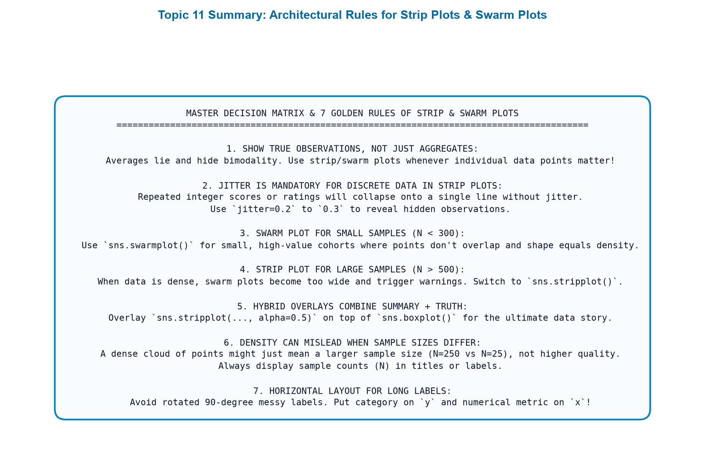
sns.stripplot): Uses random uniform jitter along the categorical axis. Highly scalable (N = 1,000+), lightning fast (O(N)), and the ideal companion for box plot overlays.sns.swarmplot): Uses a deterministic non-overlapping repulsion algorithm. Swarm width equals point density. Best suited for small-to-moderate sample sizes (N < 250). Dense datasets trigger UserWarning.dodge=True when using hue to separate subgroup points into side-by-side sub-columns rather than scrambling them in a single lane.fliersize=0) + Strip Plot, or Violin Plot (inner=None) + Swarm Plot for the ultimate balance of formal statistical summaries and raw observation transparency.Agla topic hai Seaborn Topic 12: Categorical Distribution Plots & catplot()! Wahan hum seekhenge ki kaise figure-level sns.catplot() function ke through hum strip, swarm, box, violin, bar, aur point plots ko ek single unified interface se call kar sakte hain aur multi-column facet grids create kar sakte hain!